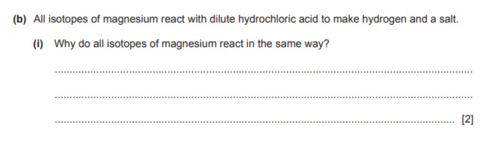
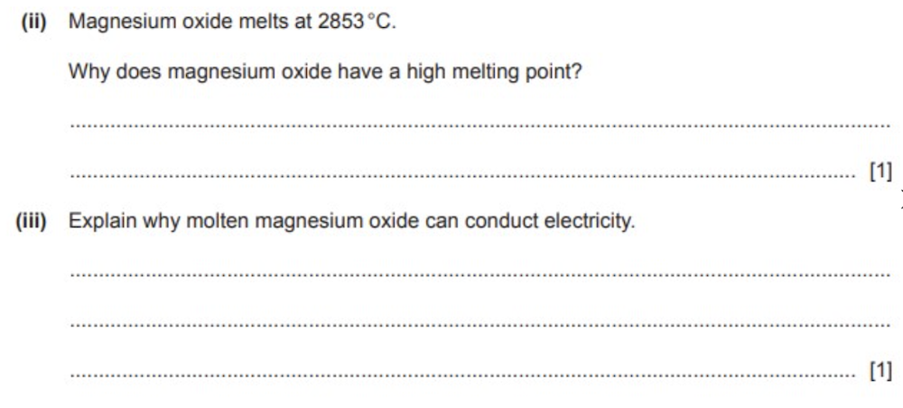

10-21-2020 ~ Girvin Djapardi
Understanding Chemistry's MS
A lot of students do not understand the significance of understanding the mark scheme. They assume that as long as they get their concepts right, everything will be as smooth as glass. Although not necessarily wrong, the mark scheme provides us invaluable information. It gives you insight into what IGCSE expects when you take the exam.
This means that you will be able to answer in the most efficient way. Your answers will only include what is needed and hence, gain full marks and still save time. A huge number of candidates take the exam and flunk open-ended questions as they either write too much that is not required or do not answer how "the mark scheme wants you to answer."

Here, the questions are asking the candidates regarding their understanding of isotopes and the feature of atoms that affects their chemical properties. Here, students can write too much by defining isotopes. It is not required as the question does not ask that. It simply asks why all isotopes of magnesium react in the same way.
Hence, it is simple due to the fact that all isotopes have the same number of proton and electron, hence, have the same number of valence electron.
A lot of times students do not properly understand the mark allocated for the question they are answering. They see only 1 mark allocated but get tricked when a greater number of lines is given than expected. A one mark question is always still a one mark question.
Take an example of these questions:

For ii) students may start explaining about ionic compounds but it is simply not required. A simple explanation of the strong electrostatic force between oppositely charged ions is more than sufficient.
For iii), even more lines are given yet only 1 mark is allocated. Students may start explaining about solubility or other unnecessary components but the answer is simply ions are free to move in molten state.
Now, to be clear, by no means am I encouraging you to start devouring mark schemes and memorize how answers are given. This is the worse thing you can do as you are focusing on root memorization instead of emphasizing understanding.
What I encourage you to do is to be familiar with how marks are given. Understand when you should write more and when 1 line is sufficient. Here, you can understand the concepts in a detailed yet concise manner and you can allocate time efficiently for tougher questions.
A common way to visualize how you should answer is when your friend is asking you a rapid question a couple of minutes before the exam. You do not want to bore them or start explaining every tiny detail you know regarding the topic. Instead, you want an answer that satisfies the curiosity in the most straight forward and concise manner.
That is for now. I will be posting one for Physics as well. Stay tuned!